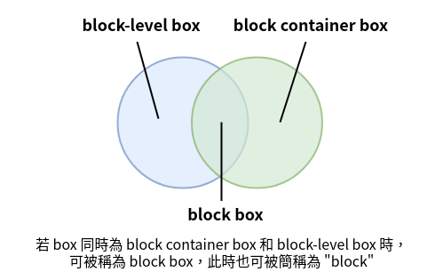
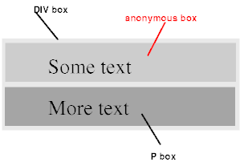

<!DOCTYPE html><html><head><meta charset="utf-8"><title>重新認識 CSS - Visual formatting model：Box generation (block box) | Titangene Blog</title><meta http-equiv="X-UA-Compatible" content="IE=edge"><meta name="viewport" content="width=device-width,initial-scale=1,maximum-scale=1"><meta name="HandheldFriendly" content="True"><meta name="apple-mobile-web-app-capable" content="yes"><meta name="author" content="Titangene"><link rel="shortcut icon" href="/favicon.ico"><link rel="alternate" href="/atom.xml" title="Titangene Blog"><meta name="description" content="在 visual formatting model 中，document tree 中的每個元素都會根據 box model 生成 0 個或多個 box，box 分為兩種不同的 type：block 和 inline。本篇將介紹 block box。"><meta property="og:type" content="article"><meta property="og:title" content="重新認識 CSS - Visual formatting model：Box generation (block box)"><meta property="og:url" content="https://titangene.github.io/article/css-box-generation-block-box.html"><meta property="og:site_name" content="Titangene Blog"><meta property="og:description" content="在 visual formatting model 中，document tree 中的每個元素都會根據 box model 生成 0 個或多個 box，box 分為兩種不同的 type：block 和 inline。本篇將介紹 block box。"><meta property="og:locale" content="zh_TW"><meta property="og:image" content="https://titangene.github.io/images/cover/css.png"><meta property="article:published_time" content="2019-10-04T13:20:42.000Z"><meta property="article:modified_time" content="2020-02-09T14:42:27.000Z"><meta property="article:author" content="Titangene"><meta property="article:tag" content="IT 鐵人賽"><meta name="twitter:card" content="summary_large_image"><meta name="twitter:image" content="https://titangene.github.io/images/cover/css.png"><meta name="twitter:creator" content="@titangeneTW"><meta name="twitter:site" content="@titangene_blog"><meta property="fb:admins" content="100001106016019"><meta property="fb:app_id" content="2470546159839111"><meta property="og:image:width" content="1200"><meta property="og:image:height" content="630"><meta name="google-site-verification" content="AaJ39L7h-nWwJjXJMhAMtXSF6H6BUgGWXC80kYvLic8"><link href="https://fonts.googleapis.com/css2?family=Roboto&display=swap" rel="stylesheet"><link href="https://fonts.googleapis.com/css?family=Source+Code+Pro&display=swap" rel="stylesheet"><link rel="stylesheet" href="https://cdnjs.cloudflare.com/ajax/libs/font-awesome/5.13.0/css/all.min.css"><link rel="stylesheet" href="https://unpkg.com/gitalk/dist/gitalk.css"><link rel="stylesheet" href="/style.css"><script async src="https://www.googletagmanager.com/gtag/js?id=UA-129758206-1"></script><script>!function(a){function n(){dataLayer.push(arguments)}a.dataLayer=a.dataLayer||[],n("js",new Date),n("config","UA-129758206-1")}(window)</script><script>function setLoadingBarProgress(e){document.getElementById("loading-bar").style.width=e+"%"}</script><meta name="generator" content="Hexo 4.2.0"><link rel="alternate" href="/atom.xml" title="Titangene Blog" type="application/atom+xml"></head></html><body><div id="loading-bar-wrapper"><div id="loading-bar"></div></div><script>setLoadingBarProgress(20)</script><header class="l_header"><div class="wrapper"><div class="nav-main container container--flex"><a class="logo flat-box" href="/">Titangene Blog</a><div class="menu"><ul class="h-list"><li><a class="flat-box nav-home" href="/">Home</a></li><li><a class="flat-box nav-archives" href="/archives">Archives</a></li></ul><div class="underline"></div></div><div class="m_search"><form name="searchform" class="form u-search-form"><input type="text" class="input u-search-input" placeholder="Search"> <i class="fas fa-search"></i></form></div><ul class="switcher h-list"><li class="s-search"><a class="fas fa-search" href="javascript:void(0)"></a></li><li class="s-menu"><a class="fas fa-bars" href="javascript:void(0)"></a></li></ul></div><div class="nav-sub container container--flex"><a class="logo flat-box" href="/">Titangene Blog</a><ul class="switcher h-list"><li class="s-comment"><a class="far fa-comment-alt" href="javascript:void(0)"></a></li><li class="s-top"><a class="fas fa-arrow-up" href="javascript:void(0)"></a></li><li class="s-toc"><a class="fas fa-list-ol" href="javascript:void(0)"></a></li></ul></div></div></header><aside class="menu-phone"><nav><a href="/" class="nav-home nav">Home </a><a href="/archives" class="nav-archives nav">Archives</a></nav></aside><script>setLoadingBarProgress(40)</script><div class="l_body"><div class="container clearfix"><div class="l_main"><article id="post-css-box-generation-block-box" class="post white-box article-type-post" itemscope itemprop="blogPost"><section class="meta"><h2 class="title"><a href="/article/css-box-generation-block-box.html">重新認識 CSS - Visual formatting model：Box generation (block box)</a></h2><span class="post-time"><span class="post-meta-item-icon"><i class="fa fa-calendar"></i> </span><span class="post-meta-item-text">發表於</span> <time title="建立時間：2019-10-04 21:20:42" itemprop="dateCreated datePublished" datetime="2019-10-04T21:20:42+08:00">2019-10-04 </time><span class="post-meta-divider">|</span> <span class="post-meta-item-icon"><i class="fa fa-calendar-check"></i> </span><span class="post-meta-item-text">更新於</span> <time title="修改時間：2020-02-09 22:42:27" itemprop="dateModified" datetime="2020-02-09T22:42:27+08:00">2020-02-09</time></span> <span class="comments-count"><span class="post-meta-divider">|</span> <span class="post-meta-item-icon"><i class="fas fa-comment"></i> </span><a href="https://titangene.github.io/article/css-box-generation-block-box.html#comments" class="article-comment-count">留言</a></span><div class="post-category"><span class="post-meta-item-icon"><i class="fa fa-folder"></i> </span><span class="post-meta-item-text">分類於</span> <span itemprop="about" itemscope itemtype="http://schema.org/Thing"><a href="/categories/css/" itemprop="url" rel="index"><span itemprop="name">CSS</span></a></span></div></section><section class="toc-wrapper"><h3>目錄</h3><ol class="toc"><li class="toc-item toc-level-2"><a class="toc-link" href="#前言"><span class="toc-text">前言</span></a></li><li class="toc-item toc-level-2"><a class="toc-link" href="#Block-level-元素-block-boxes"><span class="toc-text">Block-level 元素 &amp; block boxes</span></a><ol class="toc-child"><li class="toc-item toc-level-3"><a class="toc-link" href="#Anonymous-block-boxes"><span class="toc-text">Anonymous block boxes</span></a></li></ol></li></ol></section><section class="article typo"><div class="article-entry" itemprop="articleBody"><p></p><p>在 visual formatting model 中，document tree 中的每個元素都會根據 box model 生成 0 個或多個 box，box 分為兩種不同的 type：block 和 inline。本篇將介紹 block box。</p><a id="more"></a><p>使用 <code>display</code> 屬性可以決定 box 的 type，不同的 box type 會影響 UA 在 visual formatting model 中要如何去佈局，本篇來介紹 block 部份，之後則會介紹 <a href="https://titangene.github.io/article/css-box-generation-inline-box.html">inline 部份</a>。</p><blockquote><p>如果想瞭解 inline 部份，可參閱在此系列中的另一篇「<a href="https://titangene.github.io/article/css-box-generation-inline-box.html">重新認識 CSS - Visual formatting model：Box generation (inline)</a>」。</p></blockquote><h2 id="前言"><a class="header-anchor" href="#前言"></a>前言</h2><blockquote><p>「重新認識 CSS」這個系列名稱的由來就如其名，我想要重新認識它。雖然以前就有學過 CSS，但這次想從 CSS Spec 中學到最原始的定義和內容，更加了解 CSS 的原理，讓我在切版的時候可以更加確定自己在做什麼，我踩到的雷只是因為我不夠了解它才會炸開。</p><p>在這 30 天的內容中，會將 Spec 內看到的資料整理成這個系列，也希望正在學 CSS 的各位可以更加了解它。另外我也會同時將文章發至我的 Blog，如果想直接看文內的程式碼 Demo 畫面，可以到我的 Blog 來看 😃。</p><p>本文同步發表於 iT 邦幫忙：<a href="https://ithelp.ithome.com.tw/articles/10224653" target="_blank" rel="noopener">重新認識 CSS - Visual formatting model：Box generation (block box)</a></p><p>「重新認識 CSS」系列文章發文於：</p><ul><li><a href="https://ithelp.ithome.com.tw/users/20117586/ironman/2617" target="_blank" rel="noopener">iT 邦幫忙</a></li><li><a href="https://titangene.github.io/tags/it-%E9%90%B5%E4%BA%BA%E8%B3%BD/">Titangene Blog</a></li></ul></blockquote><h2 id="Block-level-元素-block-boxes"><a class="header-anchor" href="#Block-level-元素-block-boxes"></a>Block-level 元素 &amp; block boxes</h2><p>block-level 元素：</p><ul><li>source document 中以視覺化的方式格式化為 block 的元素 (例如：<code>p</code> 元素)</li><li>產生 block-level principal box 的元素</li><li>當元素的 <code>display</code> 屬性值為 <code>block</code>、<code>list-item</code> 或 <code>table</code> 時，該元素就會成為 block-level 元素</li></ul><p>block-level box：</p><ul><li>參與 BFC 的 box</li></ul><p>block container 元素：</p><ul><li>當該元素的 principal box 是 block container box 時，則該元素為 block container 元素</li></ul><p>block container box：</p><ul><li>block container 要麼只包含參與 IFC 的 inline-level box，要麼只包含參與 BFC 的 block-level box (可能會產生 anonymous block box 以確保此約束，後面會介紹)</li><li>只包含 inline-level content 的 block container 會建立新的 IFC，然後該元素還會產生一個 <a href="https://www.w3.org/TR/css-inline-3/#root-inline-box" target="_blank" rel="noopener">root inline box</a>，該 root inline box 會 wrap 那些 inline content</li><li>當 non-replaced 元素的 <code>display</code> 屬性值為 <code>block</code>、<code>list-item</code> 或 <code>inline-block</code> 時，該元素會產生 block container box</li></ul><blockquote><p>註：<a href="https://www.w3.org/TR/css-inline-3/#root-inline-box" target="_blank" rel="noopener">root inline box</a> 的概念是在 <a href="https://www.w3.org/TR/css-display/#block-container" target="_blank" rel="noopener">CSS Display Module Level 3</a> 中提出的，此概念取代了在 <a href="https://www.w3.org/TR/CSS22/visuren.html#anonymous" target="_blank" rel="noopener">CSS 2</a> 中提到的 anonymous inline box。</p></blockquote><p>不是所有的 block container box 都是 block-level box，例如以下這些都是 block container box，而不是 block-level box：</p><ul><li>non-replaced inline block</li><li>non-replaced table cell</li></ul><p>相反的，不是所有的 block-level box 都是 block container box，例如以下這些都是 block-level box，而不是 block container box：</p><ul><li>block-level replaced 元素 ( <code>display: block</code> )</li><li>flex container ( <code>display: flex</code> )</li><li>table box</li><li>replaced 元素的 principal box</li></ul><blockquote><p>Block-level boxes that are also block containers are called block boxes.</p><p>The three terms “block-level box,” “block container box,” and “block box” are sometimes abbreviated as “block” where unambiguous.</p></blockquote><p>也就是說，若 box 同時為 block container box 和 block-level box 時，可被稱為 block box，此時也可被簡稱為 “block”。</p><p>如下圖：</p><p></p><h3 id="Anonymous-block-boxes"><a class="header-anchor" href="#Anonymous-block-boxes"></a>Anonymous block boxes</h3><p>直接看範例，假設 <code>div</code> 元素和 <code>p</code> 元素都是 <code>display：block</code>，<code>div</code> 元素內有 inline 內容和 block 內容：</p><figure class="highlight html"><table><tr><td class="gutter"><pre><span class="line">1</span><br><span class="line">2</span><br><span class="line">3</span><br><span class="line">4</span><br></pre></td><td class="code"><pre><code class="hljs html"><span class="hljs-tag">&lt;<span class="hljs-name">div</span>&gt;</span><br>  Some text<br>  <span class="hljs-tag">&lt;<span class="hljs-name">p</span>&gt;</span>More text<span class="hljs-tag">&lt;/<span class="hljs-name">p</span>&gt;</span><br><span class="hljs-tag">&lt;/<span class="hljs-name">div</span>&gt;</span><br></code></pre></td></tr></table></figure><p></p><p>上圖說明匿名 block box 如何在匿名內容的周圍出現。</p><p><code>div</code> 元素產生 block container box，裡面有一個 block-level box (也就是範例中的 <code>p</code> 元素所產生的)，那就會強制在 block container box 裡面只會有 block-level box。</p><p>所以在 <code>div</code> 的 box 內有兩個包含 text 的矩形 box：</p><ol><li>第一個是 anonymous block box，內容為 “Some text”</li><li>第二個是 <code>p</code> 元素的 box，內容為 “More text”</li></ol><blockquote><p>本文的內容主要是依據 CSS 2.2 中的定義來說明，如有錯誤之處，歡迎告知，感謝 😃。</p></blockquote><p>資料來源：</p><ul><li><a href="https://www.w3.org/TR/CSS22/visuren.html#box-gen" target="_blank" rel="noopener">CSS 2.2 - 9.2. Controlling box generation</a></li><li><a href="https://www.w3.org/TR/css-display-3/" target="_blank" rel="noopener">CSS Display Module Level 3</a></li></ul></div><div class="article-tags tags"><a href="/tags/it-%E9%90%B5%E4%BA%BA%E8%B3%BD/" title="IT 鐵人賽">IT 鐵人賽</a></div></section><div class="article-share-links"><span>分享：</span> <a class="fab fa-facebook-f" title="Facebook" target="_blank" href="javascript:window.open('https://www.facebook.com/sharer.php?u=https%3A%2F%2Ftitangene.github.io%2Farticle%2Fcss-box-generation-block-box.html', 'Share on Facebook','width=600, height=600')"></a> <a class="fab fa-twitter" title="Twitter" target="_blank" href="javascript:window.open('https://twitter.com/share?url=https%3A%2F%2Ftitangene.github.io%2Farticle%2Fcss-box-generation-block-box.html&amp;text=重新認識 CSS - Visual formatting model：Box generation (block box)&amp;hashtags=IT鐵人賽&amp;via=titangene_blog', 'Share on Twitter','width=600, height=260')"></a> <a class="fab fa-linkedin-in" title="Linkedin" target="_blank" href="javascript:window.open('https://www.linkedin.com/shareArticle?mini=true&amp;url=https%3A%2F%2Ftitangene.github.io%2Farticle%2Fcss-box-generation-block-box.html&amp;title=重新認識 CSS - Visual formatting model：Box generation (block box)', 'Share on Linkedin','width=600, height=600')"></a> <a class="fab fa-facebook-messenger" title="Facebook Messenger" target="_blank" href="javascript:window.open('http://www.facebook.com/dialog/send?app_id=2470546159839111&amp;link=https%3A%2F%2Ftitangene.github.io%2Farticle%2Fcss-box-generation-block-box.html&amp;display=popup&amp;redirect_uri=https%3A%2F%2Fwww.facebook.com%2Fdialog%2Freturn%2Fclose%23_%3D_', 'Send in Messenger','width=600, height=600')"></a> <a class="fab fa-telegram-plane" href="https://telegram.me/share/url?url=https%3A%2F%2Ftitangene.github.io%2Farticle%2Fcss-box-generation-block-box.html&text=重新認識 CSS - Visual formatting model：Box generation (block box)" target="_blank"></a></div><nav id="article-nav"><a href="/article/css-containing-block.html" id="article-nav-prev" class="article-nav-link-wrap" title="重新認識 CSS - Containing block" rel="prev"><strong class="article-nav-caption">Prev</strong><p class="article-nav-title">重新認識 CSS - Containing block</p><i class="fas fa-angle-left"></i> </a><a href="/article/css-box-generation-inline-box.html" id="article-nav-next" class="article-nav-link-wrap" title="重新認識 CSS - Visual formatting model：Box generation (inline box)" rel="next"><strong class="article-nav-caption">Next</strong><p class="article-nav-title">重新認識 CSS - Visual formatting model：Box generation (inline box)</p><i class="fas fa-angle-right"></i></a></nav><section id="list_related_posts"><h2>相關文章</h2><ul class="related-posts"><li class="related-posts-item"><a class="related-posts-link" href="/article/css-selector-1.html">重新認識 CSS - Simple Selector & Groups of selector</a><div class="related-posts-item-abstract">Selector (選擇器) 可用來選擇 HTML 和 XML 文件中的節點，並將樣式屬性綁定到文件 (HTML 和 XML) 中的元素上。當選擇器與某元素 match 的時候，就可以對選到的元素進行 CSS 樣式設定。</div></li><li class="related-posts-item"><a class="related-posts-link" href="/article/css-attribute-value.html">重新認識 CSS - CSS 屬性值</a><div class="related-posts-item-abstract">在介紹各種 CSS 屬性之前，先來介紹屬性值，CSS 的屬性值分為：整數和實數、Lengths (長度)、百分比、URLs 和 URIs、Counters (計數器)、顏色、字串。前言「重新認識 CSS」這個系列名稱的由</div></li><li class="related-posts-item"><a class="related-posts-link" href="/article/css-collapsing-margins.html">重新認識 CSS - Collapsing margins</a><div class="related-posts-item-abstract">兩個 box 之間的 margin 相鄰 (adjoining) 時，可能會讓 margin 發生合併，這個現象就被稱為 collapsing margin，而合併的 margin 就被稱為 collapsed marg</div></li><li class="related-posts-item"><a class="related-posts-link" href="/article/css-introduction.html">重新認識 CSS - CSS 簡介</a><div class="related-posts-item-abstract">CSS 是 Cascading Style Sheets 的縮寫，是一種 style sheet (樣式表) 語言，可將自訂的樣式 (例如：字體、顏色) 附加在 HTML 文件上。這篇會先簡介 CSS，以及如何在 HTM</div></li><li class="related-posts-item"><a class="related-posts-link" href="/article/css-value-processing.html">重新認識 CSS - CSS 如何處理屬性值</a><div class="related-posts-item-abstract">今天來介紹 CSS 如何處理屬性值。前言「重新認識 CSS」這個系列名稱的由來就如其名，我想要重新認識它。雖然以前就有學過 CSS，但這次想從 CSS Spec 中學到最原始的定義和內容，更加了解 CSS 的原理，讓我在</div></li><li class="related-posts-item"><a class="related-posts-link" href="/article/css-bfc.html">重新認識 CSS - Block formatting context (BFC)</a><div class="related-posts-item-abstract">本篇將介紹 CSS 的 block formatting context (BFC)。前言「重新認識 CSS」這個系列名稱的由來就如其名，我想要重新認識它。雖然以前就有學過 CSS，但這次想從 CSS Spec 中學到最</div></li></ul></section><section class="comments" id="comments"><h2>討論區</h2><div id="gitalk-container"></div></section></article><script>window.subData={title:"重新認識 CSS - Visual formatting model：Box generation (block box)",tools:!0}</script></div><aside class="l_side"><section class="m_widget about"><div class="avatar-section"><style>.avatar-cover{background:url(/images/avatar_cover.jpg) 0 10%/cover no-repeat}</style><div class="avatar-cover"></div></div><div class="header">Titangene</div><div class="content"><div class="desc">利用 blog 紀錄學習歷程</div></div><div class="content"><meta itemprop="url" content="https://titangene.github.io"><div class="social-wrapper"><a itemprop="sameAs" href="https://github.com/titangene" class="social github" target="_blank" rel="external"><span class="fab fa-github-alt"></span> </a><a itemprop="sameAs" href="https://www.facebook.com/titangene.tw" class="social facebook" target="_blank" rel="external"><span class="fab fa-facebook-square"></span> </a><a itemprop="sameAs" href="https://www.instagram.com/titangene/" class="social instagram" target="_blank" rel="external"><span class="fab fa-instagram"></span> </a><a itemprop="sameAs" href="https://www.flickr.com/photos/titangene" class="social flickr" target="_blank" rel="external"><span class="fab fa-flickr"></span> </a><a itemprop="sameAs" href="/atom.xml" class="social rss" target="_blank" rel="external"><span class="fas fa-rss"></span></a></div></div></section><section class="m_widget facebook_page"><div class="fb-page" data-href="https://www.facebook.com/titangene.blog/" data-width="250" data-small-header="false" data-adapt-container-width="false" data-hide-cover="false" data-show-facepile="true"><blockquote cite="https://www.facebook.com/titangene.blog/" class="fb-xfbml-parse-ignore"><p><a href="https://www.facebook.com/titangene.blog/" class="social facebook" target="_blank"><span class="fab fa-facebook-square"></span></a></p><p><a href="https://www.facebook.com/titangene.blog/" target="_blank" rel="noopener">Titangene Blog</a></p><p>Loading...</p></blockquote></div></section><section class="m_widget recent"><div class="header">Recents</div><div class="content"><ul class="entry"><li><a itemprop="url" class="flat-box" href="/article/recommend-chrome-extension-1.html"><time>2020-08-09</time><div class="name">推薦 Chrome Extension：Markdown &amp; 頁面主題篇</div></a></li><li><a itemprop="url" class="flat-box" href="/article/jest-jquery-dom-testing.html"><time>2020-08-02</time><div class="name">Jest：DOM 測試 (jQuery)</div></a></li><li><a itemprop="url" class="flat-box" href="/article/jest-manual-mocks.html"><time>2020-07-26</time><div class="name">Jest：Manual Mocks</div></a></li><li><a itemprop="url" class="flat-box" href="/article/jest-timer-mocks.html"><time>2020-07-19</time><div class="name">Jest：Timer Mocks</div></a></li><li><a itemprop="url" class="flat-box" href="/article/jest-snapshot-testing.html"><time>2020-07-12</time><div class="name">Jest：Snapshot 測試</div></a></li><li><a itemprop="url" class="flat-box" href="/article/jest-mock-function.html"><time>2020-07-05</time><div class="name">Jest：Mock 函數</div></a></li><li><a itemprop="url" class="flat-box" href="/article/jest-async-test.html"><time>2020-06-28</time><div class="name">Jest：非同步測試</div></a></li></ul></div></section></aside><script>setLoadingBarProgress(60)</script></div></div><footer id="footer" class="clearfix"><div class="social-wrapper"><a href="https://github.com/titangene" class="social github" target="_blank" rel="external"><span class="fab fa-github-alt"></span> </a><a href="https://www.facebook.com/titangene.tw" class="social facebook" target="_blank" rel="external"><span class="fab fa-facebook-square"></span> </a><a href="https://www.instagram.com/titangene/" class="social instagram" target="_blank" rel="external"><span class="fab fa-instagram"></span> </a><a href="https://www.flickr.com/photos/titangene" class="social flickr" target="_blank" rel="external"><span class="fab fa-flickr"></span> </a><a href="/atom.xml" class="social rss" target="_blank" rel="external"><span class="fas fa-rss"></span></a></div><div>© 2018 - 2020 <span itemprop="copyrightHolder">Titangene</span></div><div>Powered by <a href="https://hexo.io/" target="_blank" class="codename" rel="external noopener">Hexo</a> - Theme <a href="https://github.com/stkevintan/hexo-theme-material-flow" target="_blank" class="codename" rel="external noopener">MaterialFlow</a></div><div><a rel="license noopener" href="http://creativecommons.org/licenses/by-nc-sa/4.0/" target="_blank" rel="external noopener"></a></div></footer><script>setLoadingBarProgress(80)</script><script src="//cdnjs.cloudflare.com/ajax/libs/jquery/2.1.4/jquery.min.js"></script><script src="https://cdnjs.cloudflare.com/ajax/libs/clipboard.js/2.0.0/clipboard.min.js"></script><script src="https://unpkg.com/gitalk/dist/gitalk.min.js"></script><script src="/js/jquery.fitvids.js"></script><script>var SEARCH_SERVICE="hexo",ROOT="/";ROOT.endsWith("/")||(ROOT+="/")</script><script src="/js/search.js"></script><script src="/js/app.js"></script><script src="/js/clipboard-use.js"></script><script type="text/javascript">var gitalk=new Gitalk({clientID:"dd1684f31ee17e25c22b",clientSecret:"4b51bb4a5996b04d58821a6e3da8558f23da4cdf",id:window.location.pathname,repo:"hexo-blog",owner:"titangene",admin:"titangene",distractionFreeMode:"true"});gitalk.render("gitalk-container")</script><div id="fb-root"></div><script>window.fbAsyncInit=function(){FB.init({appId:"2470546159839111",autoLogAppEvents:!0,xfbml:!0,version:"v2.11"}),FB.AppEvents.logPageView()},function(e,n,t){var o,s=e.getElementsByTagName(n)[0];e.getElementById(t)||((o=e.createElement(n)).id=t,o.src="//connect.facebook.net/zh_TW/sdk.js",s.parentNode.insertBefore(o,s))}(document,"script","facebook-jssdk")</script><script>setLoadingBarProgress(100)</script></body>